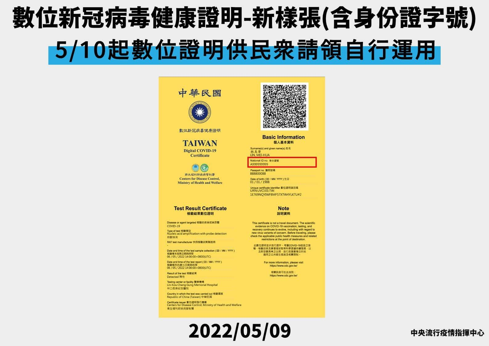
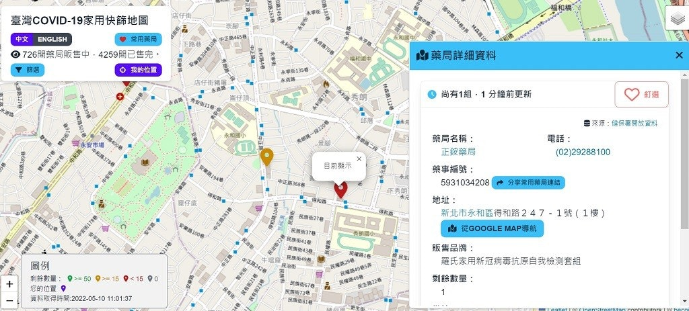
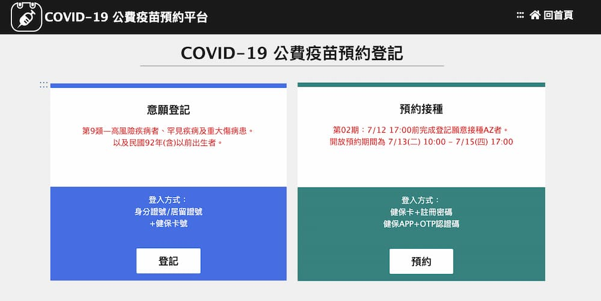
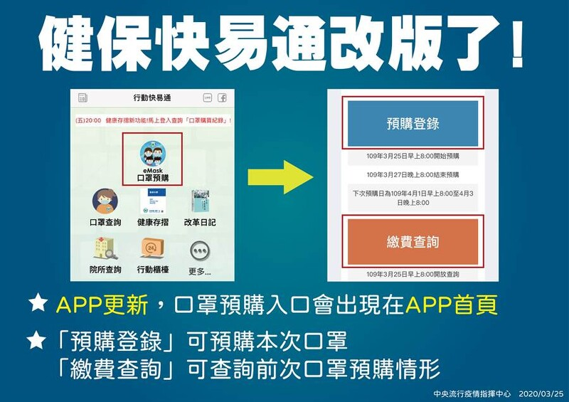

數位疫苗証明
因新冠肺炎本土疫情，中央流行疫情指揮中心公布2022/1/21上午8時起開放使用「數位新冠病毒健康證明」，並規定民眾出入部分娛樂場所例如歌廳、舞廳、理容院、夜店、三溫暖等必須出示疫苗護照。為了民眾方便出示疫苗接種證明，若在國內使用的話，除了既有的疫苗小黃卡、健保快易通 APP裡的健康存摺功能，也可以出示紙本或載具顯示的數位新冠病毒健康證明。

快篩地圖
快篩實名制上路，有需求的民眾可以前往指定健保特約藥局購買快篩試劑，如果擔心快篩試劑提早售完，也可以選擇透過「快篩地圖」線上查詢藥局的快篩試劑剩餘數量。而在藥局之外，經濟部也開放了更多快篩試劑的市場通路，因此民眾可以在超商例如7-11、全家便利商店，或是量販店包括全聯、家樂福等地方購買。
實際的快篩試劑庫存量、販售價格，以各通路官方公告為準。

1922公費疫苗預約平台
由行政院數位政委唐鳳操刀，符合政府每期公布的資格民眾，即可使用此平台來預約接種疫苗。

口罩實名制
行政院推出的「口罩實名制2.0」，開放線上預購通路，也能夠寄送給國外親友，只要到eMask網站或下載「全民健保行動快易通」App就能夠完成口罩預購，方便性大大提升。
從購買流程、取貨方式到繳費方法 ，甚至兒童口罩都可以預購了。
